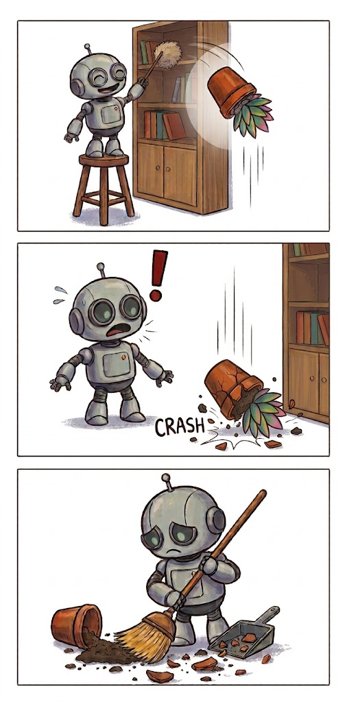
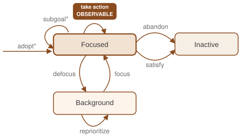
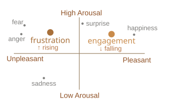

Telotrope Agents builds goal-reasoning systems that close the gap between stated objectives and what a system actually does when conditions change.
Current autonomous systems provide guardrails that constrain performance, but guide it poorly, and post-hoc explanations that excuse decisions rather than truly help you understand them. Vendors tout these solutions because the underlying technology isn't designed for inspection and doesn't understand decisions, only words.
Our solutions are based on goal reasoning and hierarchical planning, techniques that put concrete user goals first, rather than ambiguous language. We treat alignment and controllability as properties a running system maintains, not specification problems solved at design time. We provide true transparency rather than pretty lies, and behavior that users can understand and change.

Artificial intelligence technology that keeps you in control

An agent's view of the world is very lossy, just like a human's. We give our agents tools to think about what they don't see: underlying events, what other agents and people know, what their goals are, and why they are acting the way they do.
Working as a team is hard, and it requires understanding of your teammates. Telotrope agents maintain distributed, flexible plans that are responsive to surprise and maintain integrity when not in direct communication.
Most AI assistance today optimizes for a plausible continuation, not a validated one. Telotrope agents act on the request given, not the request they're prepared for, and are correctable rather than repeating the same mistake indefinitely.
We create population- and individual-scale socio-cognitive simulations based on researched and tested cognitive models, generating scoped predictions about individual and population behavior with strong models and labelled uncertainty.

Much modern AI is profoundly out of step with human values; Telotrope's agents are different
Being aligned means attempting to understand the operator's needs and intent, not just following directives blindly. We work with larger statements of intent, modeling an operator's values and long-term priorities to improve understanding and offer proactive solutions.
Agents need to stay true to operators' requests, rather than wandering down a garden path of obvious solutions. Telotrope's agents act on validated plans that pay attention to what you say, rather than learned predictions of what usually comes next; they give you what you want instead of what they remember how to do.
You need to be able to understand and trust an agent working on your behalf. Telotrope systems make important decisions based on transparent reasoning, not opaque networks. They can tell you why a decision was made, and how to change future behavior.
Led by CEO Matthew Molineaux
Our team's research on goal reasoning, explanation of past events, cognitive models, and human alignment has been developed and stress-tested across premier federal defense R&D programs, directly contributing to the state of the art in autonomous goal management. This foundation results in alignment, controllability, and transparency that hold up in ways black-box approaches structurally cannot, because our agents reason with observable and inspectable logic rather than opaque networks. We continue extending this foundation into new domains wherever an autonomous system needs to stay understandable and correctable.
Foundational papers behind the goal-reasoning and alignment methods above.
Please inquire about technical capabilities, teaming, and custom development needs.
Telotrope Agents, Inc.
Matthew Molineaux, CEO
Dayton, Ohio Region